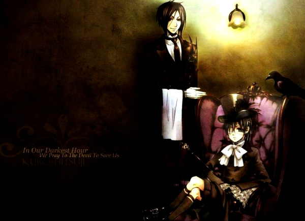

∮作品簡介﹑

凡多姆海伍家主人謝爾·凡多姆海伍與管家（執事）賽巴斯欽·米卡艾利斯的日常生活，以及揭開隱藏在平常表面下的黑社會的黑幕的故事。故事背景設定於19世紀英國維多利亞女王時期，以華麗的風格描繪。
身為凡多姆海伍家的執事，連這種程度的事情都做不了的話又該怎麼辦呢？英國名門貴族凡多姆海伍家的執事，塞巴斯欽·米卡艾利斯在知識、教養、品味、料理、武術......等所有的方面都表現得十分完美。侍奉著年僅12歲的主人(在漫畫中已經過了13歲)，適合世界上最好喝的紅茶的執事漫畫在此奉獻給您……我有生之年……都會做您的執事。